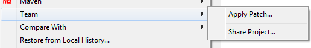
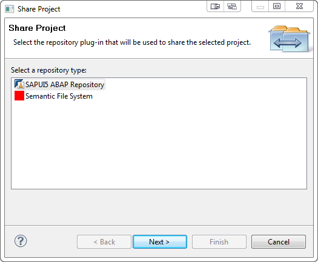
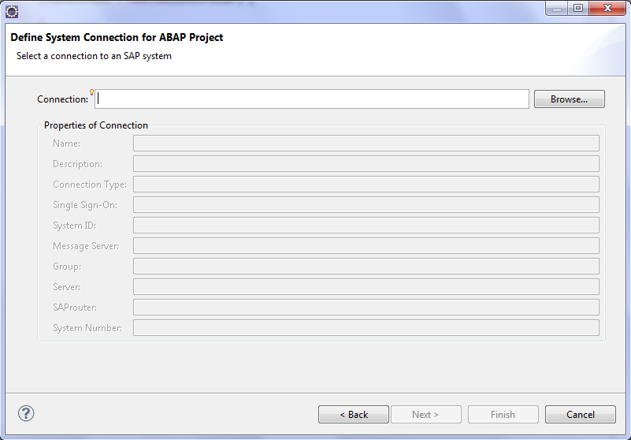
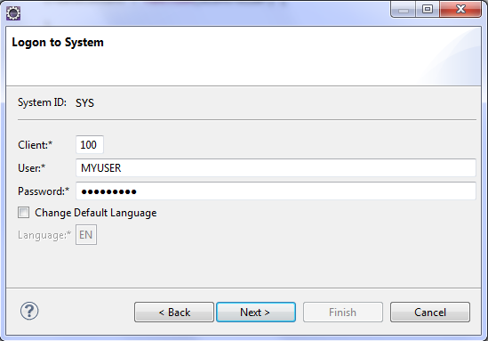
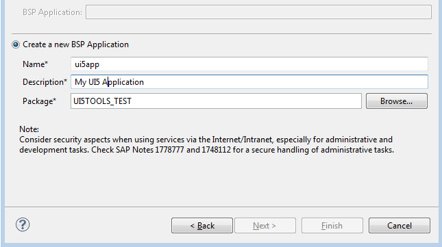
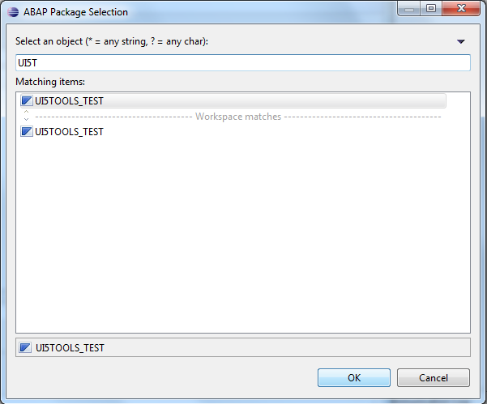
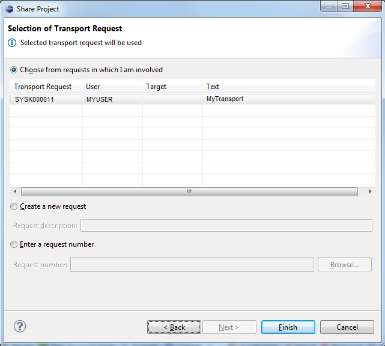

Sharing the SAPUI5 Application Project with the SAPUI5 Repository
You want to upload a new SAPUI5 application into a new BSP application on the ABAP server.
Before the upload, make sure that
-
You have created a SAPUI5 application using SAPUI5 application development tools.
-
Optional: You have tested the SAPUI5 application locally in Eclipse.
-
The ABAP system you are using is available in your SAP GUI Logon group. We recommend that you enable Single Sign-on.
To share the SAPUI5 application project with the SAPUI5 repository, proceed as follows:
-
In Eclipse, go to the Project Explorer view and select the required SAPUI5 application project.
In the context menu of the selected SAPUI5 application project, choose
 Team
Team  Share Project…
Share Project…  .
. Select SAPUI5 ABAP Repository as the repository type.
Choose Next. Configure the connection to the ABAP system by using the Browse… button. You can only select system connections that are configured in the SAP GUI Launchpad.
Choose Next. Provide the required information for client, user, password, and language.
Note Choosing the correct logon language is important. When creating a new repository this will become the original language of the repository. For submitting files to the repository you have to be logged on in the original language, otherwise an error will occur.-
Choose Next. The SAPUI5 application project can either be shared with an existing or with a newly created BSP application.
-
Select Create a New BSP Application and enter name, description, and package (manually or via the Browse… button).


-
Alternatively, if the BSP application has been created manually, or if you want to download an existing one, choose Select a BSP Application and select an existing BDSP application artifact for SAPUI5 from the list.
-
- Choose Next. Note If the new BSP application belongs to a transportable ABAP package, choose/create a transport request before finishing the wizard. Since transport requests are not automatically released, explicitly release them later using transaction SE61.

- Choose Finish.
The selected SAPUI5 application project is now connected to the SAPUI5 BSP application artifact of the SAPUI5 Repository. A description containing the ABAP system, client, user, language, and SAPUI5 BSP application name is displayed next to the project name.